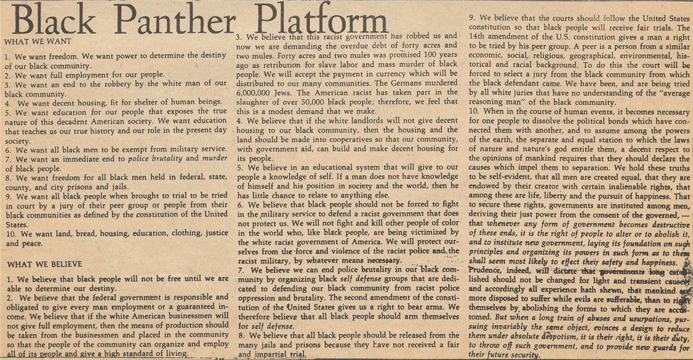
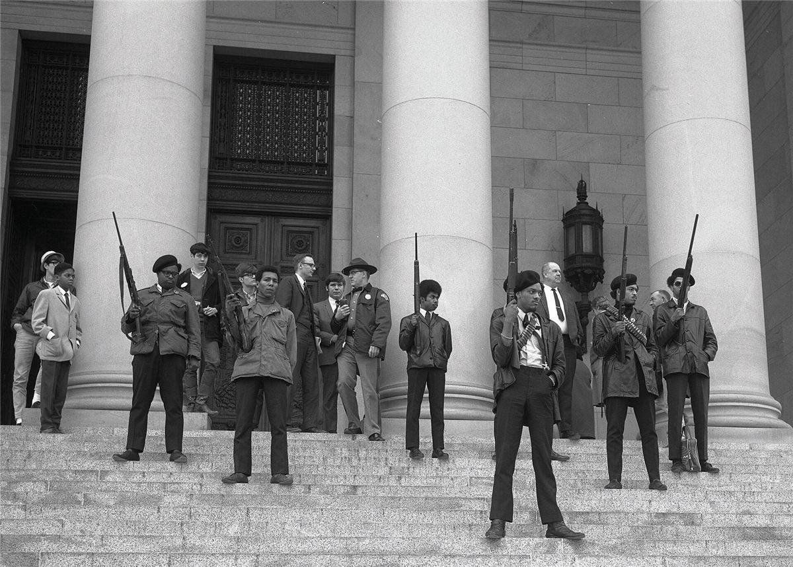
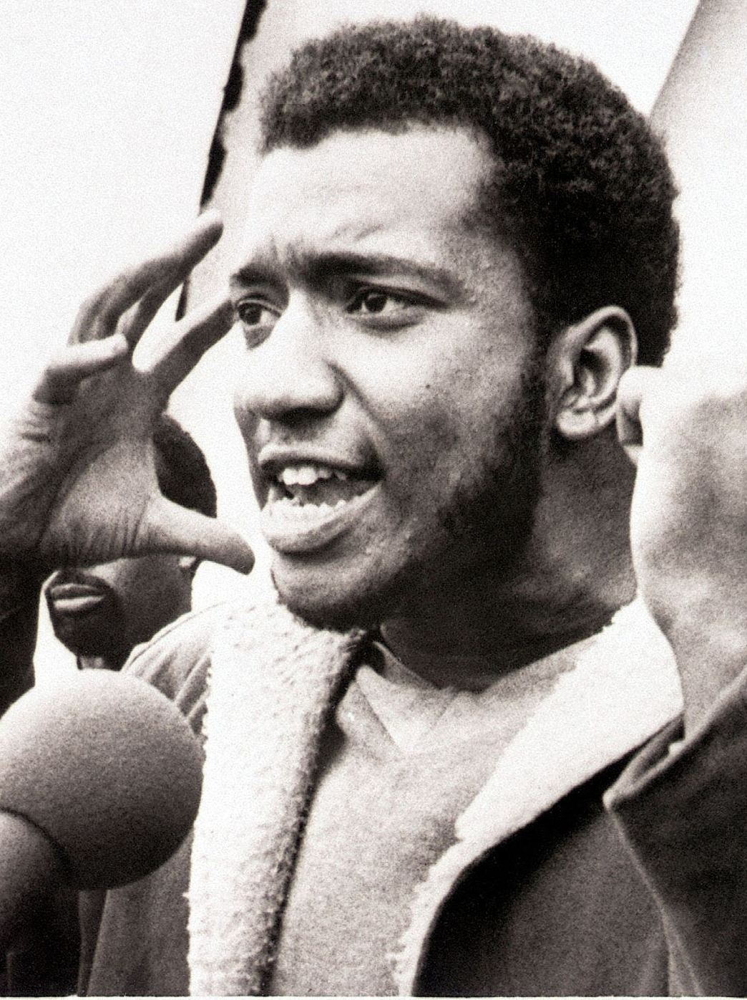

Mamie avait vingt ans quand les photos sont arrivées en France : des jeunes Noirs en blouson de cuir et béret, debout devant le Capitole de Californie. On a d'abord retenu les fusils. Mais ce que les Black Panthers ont laissé de plus fort, ce sont des petits-déjeuners, des cliniques et des écoles : la preuve qu'un quartier abandonné par l'État peut s'organiser lui-même.
Le Black Panther Party n'était pas anarchiste : il se réclamait du marxisme-léninisme et avait une direction très centralisée. Mais ses programmes d'entraide et son autodéfense ont inspiré des générations de libertaires, et plusieurs de ses anciens membres sont devenus des figures de l'anarchisme noir.
Le contexte : ghettos et police
Au milieu des années 1960, les lois ségrégationnistes du Sud sont abolies grâce au mouvement des droits civiques. Mais dans les grandes villes du Nord et de l'Ouest, les Noirs vivent dans des ghettos : logements insalubres, chômage, écoles délaissées, et surtout une police violente, presque entièrement blanche, qui contrôle, frappe et tue sans rendre de comptes. En 1965, Malcolm X est assassiné ; la même année, le quartier de Watts, à Los Angeles, se soulève après une interpellation.
1966 : le parti de l'autodéfense
Le 15 octobre 1966, à Oakland, en Californie, Huey P. Newton et Bobby Seale fondent le Black Panther Party for Self-Defense, le parti de la panthère noire pour l'autodéfense. Ils rédigent un programme en dix points : le plein emploi, des logements décents, une éducation qui raconte la vraie histoire des Noirs, la fin des violences policières, la libération des prisonniers noirs, et, pour résumer, « la terre, le pain, le logement, l'éducation, l'habillement, la justice et la paix ».

Surveiller la police
Leur première action est simple et audacieuse. La loi californienne autorise alors à porter une arme chargée à la vue de tous. Les Panthers suivent donc les voitures de police dans les quartiers noirs, armés et le code pénal à la main. Quand quelqu'un est arrêté, ils se postent à distance légale, lisent ses droits à voix haute et observent. C'est l'ancêtre de ce qu'on appelle aujourd'hui le copwatch.
Le 2 mai 1967, une trentaine de Panthers armés entrent au Capitole de Sacramento pour protester contre un projet de loi qui veut leur interdire de porter des armes. Les images font le tour du monde. La loi passe quand même en juillet 1967 (le Mulford Act, signé par le gouverneur Ronald Reagan), et les patrouilles armées s'arrêtent.

De quelques militants à un parti national
Après l'assassinat de Martin Luther King, en avril 1968, des milliers de jeunes rejoignent le parti. Des sections s'ouvrent dans des dizaines de villes. Le journal The Black Panther se vend dans tout le pays. En 1969, le parti compte environ 5 000 membres, et beaucoup de femmes : selon les sources, entre la moitié et les deux tiers des militants au tournant des années 1970.
Le parti change aussi de visage : moins de fusils, plus de « programmes de survie ». Petits-déjeuners gratuits, cliniques, écoles, distribution de vêtements : on les raconte dans la page suivante.
La répression : COINTELPRO
En 1969, le directeur du FBI, J. Edgar Hoover, présente le parti comme la plus grande menace pour la sécurité intérieure du pays. Le FBI le vise avec son programme secret COINTELPRO : écoutes, infiltrations, fausses lettres pour monter les militants les uns contre les autres, procès à répétition.

Le 4 décembre 1969, à Chicago, la police fait irruption avant l'aube dans l'appartement de Fred Hampton, 21 ans, responsable de la section de l'Illinois, et le tue dans son lit avec Mark Clark. Un informateur du FBI avait fourni le plan de l'appartement. Hampton venait de construire une « coalition arc-en-ciel » avec les Young Lords portoricains et les Young Patriots, des Blancs pauvres venus du Sud : exactement ce que le pouvoir craignait.
Des dizaines de Panthers sont tués ou emprisonnés pendant ces années. Certains sont toujours en prison aujourd'hui, comme le journaliste Mumia Abu-Jamal, ancien membre du parti.
Divisions et fin
Au début des années 1970, le parti se déchire. Huey Newton, à Oakland, veut se concentrer sur les programmes sociaux et les élections locales ; Eldridge Cleaver, en exil à Alger, veut la lutte armée. La scission de 1971, attisée par le FBI, est violente. De 1974 à 1977, pendant l'exil de Newton, c'est une femme, Elaine Brown, qui dirige le parti. L'école communautaire d'Oakland, dernier grand programme, ferme en 1982 : c'est la fin du Black Panther Party.
Chronologie
- 15 oct. 1966Fondation du Black Panther Party for Self-Defense à Oakland.
- 2 mai 1967Les Panthers armés au Capitole de Sacramento.
- Juillet 1967Le Mulford Act interdit le port d'armes chargées en public.
- Avril 1968Assassinat de Martin Luther King ; le parti grandit très vite.
- 1969Petits-déjeuners gratuits dans tout le pays ; conférence contre le fascisme à Oakland.
- 4 déc. 1969Fred Hampton et Mark Clark tués par la police de Chicago.
- 1971Scission entre Newton et Cleaver.
- 1974-1977Elaine Brown dirige le parti.
- 1982Fermeture de l'école communautaire d'Oakland, fin du parti.
Dans ce dossier
Sources et pour aller plus loin
Lire
- Body and Soul: The Black Panther Party and the Fight against Medical Discrimination, Alondra Nelson, University of Minnesota Press, 2011.L'histoire des cliniques et du combat des Panthers pour la santé. En anglais.
- A Taste of Power, Elaine Brown, Pantheon, 1992.Les mémoires de la femme qui a dirigé le parti. En anglais.
Sur le web
- Le Black Panther Party sur WikipédiaUne page très complète : histoire, programmes, femmes, répression.
- Fred HamptonSa vie, la coalition arc-en-ciel et son assassinat.
- COINTELPROLe programme secret du FBI contre les mouvements contestataires.
Dossier rédigé par la bande à Mamie à partir de travaux d'historiennes et d'historiens et de textes des mouvements concernés. Libre de reproduction.